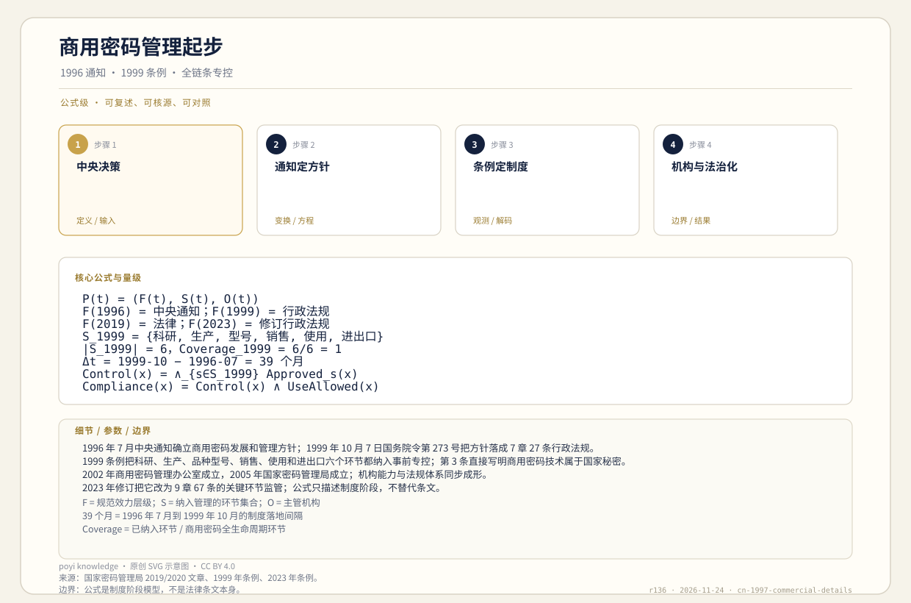

原理与机制
中国密码史：商用密码管理起步（Start of Commercial Cryptography Administration）。商用密码管理不是一个孤立的 1997 年事件，而是一条从政策到法规再到法律的制度链。1993 年中央作出大力发展商用密码的决定；1996 年 7 月党中央印发《关于发展商用密码和加强对商用密码管理工作的通知》，确立发展与管理的方针；1999 年 10 月 7 日国务院发布《商用密码管理条例》（国务院令第 273 号），把方针落成 7 章 27 条的行政法规。1999 条例的抓手是全链条专控：第 3 条明确商用密码技术属于国家秘密，国家对商用密码产品的科研、生产、销售和使用实行专控管理；第 5 条指定科研单位，第 7 条指定生产单位，第 8 条审批品种型号，第 10 条许可销售，第 14 条要求使用经认可的产品，第 15 条管理境外组织使用，第 13 条管进出口。把六个环节写成集合 S_1999，就得到 Coverage_1999=6/6。机构建设随后补齐：2002 年商用密码管理办公室成立，2005 年国家密码管理局成立。2012 年以后，放管服改革逐步取消部分许可；2019 年密码法把商用密码管理升为法律；2023 年修订条例把全链条事前审批改为关键环节监管。公式里的 F(t) 表示规范效力层级，S(t) 表示纳入管理的环节集合，O(t) 表示主管机构，三者共同描述制度阶段。

为什么重要
这段历史回答的是“商用密码为什么会被管、由谁管、用什么规范管”。在 1990 年代，商用密码产品少、用途敏感、市场尚未形成，全链条专控可以把研发、生产、销售和使用都纳入国家能力范围，避免密码技术无序扩散。它也为后来的标准化、检测认证和关键信息基础设施保护提供了组织与法规基础。但制度起点不等于今天的制度。1999 条例把商用密码技术整体视为国家秘密，这在当时有安全理由，却与后来的市场化、国际化和放管服改革产生张力；2019 年密码法和 2023 年修订条例逐步把“全链条事前审批”改成“关键环节监管 + 检测认证 + 事中事后监管”。理解这个转变，才能理解今天为什么既有放宽准入，又有强制检测认证和密评。
应用与实例
读 1999 条例时，可以把它当成一张六环节审批表：科研环节看是否由指定单位承担；生产环节看是否由指定单位生产；品种型号看是否经批准；销售环节看是否有销售许可证；使用环节看是否使用经认可的产品；进出口环节看是否报经批准。六个环节都通过，才满足当时的 Control(x)=∧Approved_s(x)。这张表也解释了当时的合规成本：企业不仅要拿到产品检测合格，还要拿到生产、销售、型号等资格；用户只能使用经认可的产品，不得使用自行研制或境外生产的密码产品。理解这些条款，才能把“制度起步”与“制度成本”同时讲清楚，而不是只讲年份。
边界与攻击面
1999 条例的边界在于：它是一套事前专控体系，不是现代意义上的商用密码市场监管体系。全链条审批会抬高准入成本、拉长产品上市周期，也难以适应互联网和全球化市场。2012 年以后，生产单位审批、销售单位许可等逐步取消；2023 年修订条例明确取消生产单位审批、销售单位许可、品种型号审批，改为检测认证和关键环节监管。另一个边界是规范效力：1999 条例是行政法规，不是法律；2019 年密码法才把商用密码分类管理、标准化、检测认证、市场准入和法律责任升到法律层级。2023 条例是国务院令第 760 号，仍在上位法之下。公式中的 F(t) 只是层级标记，不是把通知、条例、法律混为一谈。
历史与背景
时间线可以压缩成五个节点：1993 年中央决定大力发展商用密码；1996 年 7 月中央印发通知，确立发展和管理方针；1999 年 10 月 7 日国务院令第 273 号发布《商用密码管理条例》；2002 年商用密码管理办公室成立；2005 年国家密码管理局成立。2019 年 10 月 26 日密码法通过，2020 年 1 月 1 日施行；2023 年 4 月 27 日国务院令第 760 号修订条例，2023 年 7 月 1 日施行。这条时间线也解释了卡片 ID 里的“1997”只是历史占位：官方文献把关键节点定在 1996 年通知和 1999 年条例，而不是 1997 年。正文以官方时间线为准，ID 保留是为了不破坏既有链接。
逐步示例与核验
事件时间线模型
背景 → 过程 → 结果 → 争议。背景写此前技术/制度；过程写可核参与者与时间；结果写后续标准、机器、课程或政策；争议写二手叙述与一手材料的差距。
参考出处
- Wikipedia search entry for 商用密码管理起步. https://zh.wikipedia.org/w/index.php?search=%E5%95%86%E7%94%A8%E5%AF%86%E7%A0%81%E7%AE%A1%E7%90%86%E8%B5%B7%E6%AD%A5
- 《密码简史：穿越远古 展望未来》（杨义先、钮心忻，电子工业出版社，2020，ISBN 9787121398711）. https://book.cppinfo.cn/Encyclopedias/home/index?id=3730464